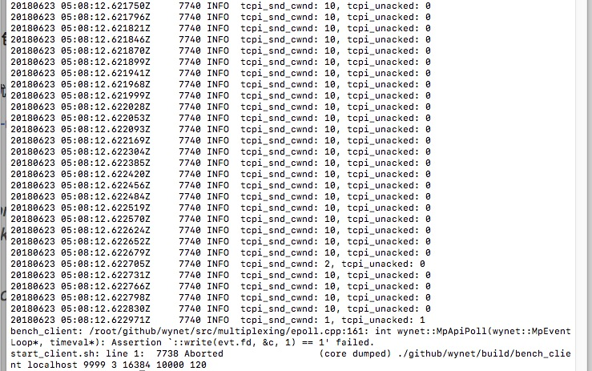

<!DOCTYPE html>
<html>
  <head>
    <title>多线程网络库开发笔记 – Wyman的原创技术博客 – 恭喜你发现我的小站，撩我请加QQ：234707482、Wechat：_Wyman</title>

        <meta charset="utf-8" />
    <meta content='text/html; charset=utf-8' http-equiv='Content-Type'>
    <meta http-equiv='X-UA-Compatible' content='IE=edge'>
    <meta name='viewport' content='width=device-width, initial-scale=1.0, maximum-scale=1.0'>
    <meta name="baidu-site-verification" content="0OpfO1OtHA" />
    
    <meta name="description" content="" />
    <meta property="og:description" content="" />
    
    <meta name="author" content="Wyman的原创技术博客" />

    
    <meta property="og:title" content="多线程网络库开发笔记" />
    <meta property="twitter:title" content="多线程网络库开发笔记" />
    

    <!--[if lt IE 9]>
      <script src="http://html5shiv.googlecode.com/svn/trunk/html5.js"></script>
    <![endif]-->

    <link rel="stylesheet" type="text/css" href="/style.css" />
    <link rel="alternate" type="application/rss+xml" title="Wyman的原创技术博客 - 恭喜你发现我的小站，撩我请加QQ：234707482、Wechat：_Wyman" href="/feed.xml" />
    
	<!-- Google Analytics -->
	<script>
		(function(i,s,o,g,r,a,m){i['GoogleAnalyticsObject']=r;i[r]=i[r]||function(){
		(i[r].q=i[r].q||[]).push(arguments)},i[r].l=1*new Date();a=s.createElement(o),
		m=s.getElementsByTagName(o)[0];a.async=1;a.src=g;m.parentNode.insertBefore(a,m)
		})(window,document,'script','//www.google-analytics.com/analytics.js','ga');

		ga('create', 'UA-65954265-1', 'auto');
		ga('send', 'pageview', {
		  'page': '/wynet-1/',
		  'title': '多线程网络库开发笔记'
		});
	</script>
	<!-- End Google Analytics -->
	<!-- Baidu Analytics -->
	<script>
		var _hmt = _hmt || [];
		(function() {
		  var hm = document.createElement("script");
		  hm.src = "//hm.baidu.com/hm.js?0dc968591d8c64196a37eca9ca4f86b3";
		  var s = document.getElementsByTagName("script")[0]; 
		  s.parentNode.insertBefore(hm, s);
		})();
	</script>
	<!-- End Baidu Analytics -->

  </head>

  <body>
    <div class="wrapper-masthead">
      <div class="container">
        <header class="masthead clearfix">
          <a href="/" class="site-avatar"></a>

          <div class="site-info">
            <h1 class="site-name"><a href="/">Wyman的原创技术博客</a></h1>
            <p class="site-description">恭喜你发现我的小站，撩我请加QQ：234707482、Wechat：_Wyman</p>
          </div>

          <nav>
            <a href="/">Blog</a>
            <a href="/about">About</a>
          </nav>
        </header>
      </div>
    </div>

    <nav class="nav2">
      <ul></ul>
    </nav>

    <div id="main" role="main" class="container">
      <section>  
        <script src="https://code.jquery.com/jquery-3.3.0.min.js" integrity="sha256-RTQy8VOmNlT6b2PIRur37p6JEBZUE7o8wPgMvu18MC4=" crossorigin="anonymous"></script>
<script src="/main.js"></script>

<h1>多线程网络库开发笔记</h1>
<h3>Tags: <a href="/tag/synchronize/" rel="tag">synchronize</a></h3>
<article class="post">
  <div class="entry">
    <!--more-->

<h2>收到EPOLLOUT事件，但write时返回了EAGAIN？</h2>

<p>这是因为EAGAIN不止是在发送缓冲区满时返回，还可能是<strong>未ACK的包数量已经达到了拥塞窗口的大小</strong>。</p>

<p>而EPOLLOUT并不会检查拥塞窗口的情况，只要发送缓冲区不满，就返回EPOLLOUT了。</p>

<p>用并发压力测试可以测出这种情况：在epoll_wait返回后，检测可写事件的fd是否发送缓冲区不满，不满的话尝试写入一个字节，然后通过write的返回值和错误码就可以知道有没出现<strong>缓冲区不满的EAGAIN</strong>。同时打印出拥塞窗口信息，就可以看出EAGAIN原因：</p>

<p></p>

<p>参考资料：<a href="https://stackoverflow.com/questions/3070127/will-eagain-return-on-send-for-anything-other-than-buffer-full">https://stackoverflow.com/questions/3070127/will-eagain-return-on-send-for-anything-other-than-buffer-full</a></p>

<p><a href="https://linuxgazette.net/136/pfeiffer.html">https://linuxgazette.net/136/pfeiffer.html</a></p>

<blockquote>
<p>EAGAIN/EWOULDBLOCK can also be returned (for TCP sockets) when the number of unacknowledged packets has reached the congestion window.</p>

<p>To check the status of the socket w.r.t. the congestion window, then try this:</p>
</blockquote>
<div class="highlight"><pre><code class="language-c" data-lang="c"><span class="cp">#include &lt;netinet/tcp.h&gt;
</span><span class="k">static</span> <span class="kt">void</span> <span class="nf">print_tcp_cwnd</span><span class="p">(</span><span class="kt">int</span> <span class="n">socket</span><span class="p">)</span>
<span class="p">{</span>
    <span class="k">struct</span> <span class="n">tcp_info</span> <span class="n">tcp_info</span><span class="p">;</span>
    <span class="n">uint</span> <span class="n">tcp_info_length</span> <span class="o">=</span> <span class="k">sizeof</span><span class="p">(</span><span class="n">tcp_info</span><span class="p">);</span>
    <span class="k">if</span> <span class="p">(</span> <span class="n">getsockopt</span><span class="p">(</span> <span class="n">socket</span><span class="p">,</span> <span class="n">SOL_TCP</span><span class="p">,</span> <span class="n">TCP_INFO</span><span class="p">,</span> <span class="p">(</span><span class="kt">void</span> <span class="o">*</span><span class="p">)</span><span class="o">&amp;</span><span class="n">tcp_info</span><span class="p">,</span> <span class="o">&amp;</span><span class="n">tcp_info_length</span> <span class="p">)</span> <span class="o">==</span> <span class="mi">0</span> <span class="p">)</span> 
    <span class="p">{</span>
        <span class="n">printf</span><span class="p">(</span><span class="s">"tcpi_snd_cwnd: %u, tcpi_unacked: %u</span><span class="se">\n</span><span class="s">"</span><span class="p">,</span>
            <span class="n">tcp_info</span><span class="p">.</span><span class="n">tcpi_snd_cwnd</span><span class="p">,</span>
            <span class="n">tcp_info</span><span class="p">.</span><span class="n">tcpi_unacked</span>
           <span class="p">);</span>
    <span class="p">}</span>
<span class="p">}</span>
</code></pre></div>
<blockquote>
<p>If tcpi_unacked == tcpi_snd_cwnd then send() will return EAGAIN/EWOULDBLOCK for a non-blocking socket.</p>
</blockquote>

<h2>write无限返回EAGAIN导致的cpu超载和FIN_WAIT1卡死</h2>

<p>这是只会出现在非阻塞socket的问题。</p>

<p>解决思路：</p>

<ul>
<li><p>检查是不是意外调用了onWritable接口，即还没有监听可写事件，却调用了可写回调接口</p></li>
<li><p>尝试用while循环来调用send data，直到send发完数据，或返回-1（EAGAIN）并添加可写监听。</p></li>
</ul>

<p>另外，收到可写事件时，尝试write剩余字节，如果write能把所有字节都写进发送队列，那么就可以删除EPOLLOUT监听了。</p>

<h2>atomic变量也会segment fault?</h2>
<div class="highlight"><pre><code class="language-c" data-lang="c">
<span class="cp">#0  0x00000000004cb56b in std::atomic&lt;wynet::TcpConnection::State&gt;::load (this=0x58, 
</span>    <span class="n">_m</span><span class="o">=</span><span class="n">std</span><span class="o">::</span><span class="n">memory_order_seq_cst</span><span class="p">)</span> <span class="n">at</span> <span class="o">/</span><span class="n">usr</span><span class="o">/</span><span class="n">include</span><span class="o">/</span><span class="n">c</span><span class="o">++/</span><span class="mi">4</span><span class="p">.</span><span class="mi">8</span><span class="p">.</span><span class="mi">2</span><span class="o">/</span><span class="n">atomic</span><span class="o">:</span><span class="mi">209</span>
<span class="cp">#1  0x00000000004c9a6d in std::atomic&lt;wynet::TcpConnection::State&gt;::operator wynet::TcpConnection::State
</span>    <span class="p">(</span><span class="n">this</span><span class="o">=</span><span class="mh">0x58</span><span class="p">)</span> <span class="n">at</span> <span class="o">/</span><span class="n">usr</span><span class="o">/</span><span class="n">include</span><span class="o">/</span><span class="n">c</span><span class="o">++/</span><span class="mi">4</span><span class="p">.</span><span class="mi">8</span><span class="p">.</span><span class="mi">2</span><span class="o">/</span><span class="n">atomic</span><span class="o">:</span><span class="mi">176</span>
<span class="cp">#2  0x00000000004f0fa1 in wynet::TcpConnection::shutdown (this=0x0)
</span>    <span class="n">at</span> <span class="o">/</span><span class="n">root</span><span class="o">/</span><span class="n">github</span><span class="o">/</span><span class="n">wynet</span><span class="o">/</span><span class="n">src</span><span class="o">/</span><span class="n">connection</span><span class="p">.</span><span class="n">cpp</span><span class="o">:</span><span class="mi">74</span>

</code></pre></div>
<p>gdb查core文件，发现日志很奇怪，在atomic的load里crash了。</p>

<p>最终发现是访问了一个null的shared_ptr的atomic变量。加if判断即可。</p>

<h2>10k和10k+连接问题</h2>

<p>10k数量级的网络连接，是非常容易暴露出自己写的网络代码的问题的。</p>

<p>局域网下有2种测试方法：</p>

<ol>
<li><p>server和clients同主机（走回环，不需要经过网卡）</p></li>
<li><p>server和clients不同主机，clients可以分散到多台主机（需要经过网卡）</p></li>
</ol>

<p>我现在做的第一种，本地开2个进程，一个进程跑server，另一个进程发起10k+个客户端连接，pingpong发消息，可以测吞吐量并且也可以测下承载能力。</p>

<p>目前遇到很多问题，逐个列举下：</p>

<ul>
<li><p>打开文件描述符数量限制。可以用ulimit -n修改。Mac下有些特殊。</p></li>
<li><p>客户端的port不够用。</p></li>
</ul>

<p>先查看系统上限：cat /proc/sys/net/ipv4/ip_local_port_range，可能会输出32768   60999，只有28231个端口可用。
但由于port是双字节，理论上撑死只有3万个port可以用。改大这个范围的意义不大。此时要考虑多主机来测试30k+连接了。</p>

<h2>多线程：wait morphing</h2>

<p>以pthread为例，在C++中使用pthread的pthread_mutex_xxx和pthread_cond_xxx，实现RAII的mutex guard类以及阻塞队列(BlockingQueue)时，会遇到wait morphing的需求。</p>

<p>例如，一般会先实现2个类：MutexLock，和MutexLockGuard：</p>
<div class="highlight"><pre><code class="language-cpp" data-lang="cpp"><span class="k">class</span> <span class="nc">MutexLock</span><span class="p">;</span>

<span class="k">class</span> <span class="nc">MutexLockGuard</span> <span class="p">{</span>
    <span class="n">MutexLock</span> <span class="o">&amp;</span><span class="n">m_mutex</span><span class="p">;</span>
<span class="nl">public:</span>
    <span class="n">MutexLockGuard</span><span class="p">(</span><span class="n">MutexLock</span> <span class="o">&amp;</span><span class="n">mutex</span><span class="p">)</span> <span class="o">:</span> <span class="n">m_mutex</span><span class="p">(</span><span class="n">mutex</span><span class="p">)</span>
    <span class="p">{</span>
        <span class="n">m_mutex</span><span class="p">.</span><span class="n">lock</span><span class="p">();</span>
    <span class="p">}</span>

    <span class="o">~</span><span class="n">MutexLockGuard</span><span class="p">()</span>
    <span class="p">{</span>
        <span class="n">m_mutex</span><span class="p">.</span><span class="n">unlock</span><span class="p">();</span>
    <span class="p">}</span>
<span class="p">};</span>
</code></pre></div>
<p>然后是BlockingQueue：</p>
<div class="highlight"><pre><code class="language-cpp" data-lang="cpp"><span class="k">template</span> <span class="o">&lt;</span><span class="k">typename</span> <span class="nc">T</span><span class="p">&gt;</span>
<span class="k">class</span> <span class="nc">BlockingQueue</span>
<span class="p">{</span>
<span class="nl">public:</span>
    <span class="kt">void</span> <span class="n">put</span><span class="p">(</span><span class="k">const</span> <span class="n">T</span> <span class="o">&amp;</span><span class="n">x</span><span class="p">)</span>
    <span class="p">{</span>
        <span class="n">MutexLockGuard</span> <span class="n">lock</span><span class="p">(</span><span class="n">m_mutex</span><span class="p">);</span>
        <span class="n">m_queue</span><span class="p">.</span><span class="n">push_back</span><span class="p">(</span><span class="n">x</span><span class="p">);</span>
        <span class="n">m_notEmpty</span><span class="p">.</span><span class="n">notify</span><span class="p">();</span> <span class="c1">// wait morphing</span>
        <span class="c1">// 注意，lock是在退出本函数时才销毁，所以顺序是：cond signal -&gt; unlock</span>
    <span class="p">}</span>

    <span class="n">T</span> <span class="n">pop</span><span class="p">()</span>
    <span class="p">{</span>
        <span class="n">MutexLockGuard</span> <span class="n">lock</span><span class="p">(</span><span class="n">m_mutex</span><span class="p">);</span>
        <span class="k">while</span> <span class="p">(</span><span class="n">m_queue</span><span class="p">.</span><span class="n">empty</span><span class="p">())</span>
        <span class="p">{</span>
            <span class="n">m_notEmpty</span><span class="p">.</span><span class="n">wait</span><span class="p">();</span>
        <span class="p">}</span>
        <span class="n">T</span> <span class="n">front</span><span class="p">(</span><span class="n">std</span><span class="o">::</span><span class="n">move</span><span class="p">(</span><span class="n">m_queue</span><span class="p">.</span><span class="n">front</span><span class="p">()));</span>
        <span class="n">m_queue</span><span class="p">.</span><span class="n">pop_front</span><span class="p">();</span>
        <span class="k">return</span> <span class="n">front</span><span class="p">;</span>
    <span class="p">}</span>
<span class="p">};</span>
</code></pre></div>
<p>调用BlockingQueue的put函数，做了几个事情：</p>

<ol>
<li>lock了mutex</li>
<li>put一个对象到队列</li>
<li>发射条件变量信号</li>
<li>函数退出，unlock了mutex</li>
</ol>

<p>MutexLockGuard对mutex lock/unlock的封装，是非常符合RAII的，只需要在函数开头声明一个栈变量，就可以保证成对的lock、unlock。</p>

<p>然而，这个特性遇到条件变量时，就不是很好了。首先，因为unlock和notify是2个单独的操作，谁先谁后，效果并不一样。以上面的put函数为例，put完一个对象后，做2种情景假设。</p>

<p>情景1：</p>

<ol>
<li>线程1先unlock了mutex</li>
<li>线程1调用notify，唤醒等待线程2</li>
<li>等待线程2被唤醒，因为mutex已经unlock，于是立即就lock到了mutex</li>
</ol>

<p>情景2：</p>

<ol>
<li>线程1先调用notify，唤醒等待线程2</li>
<li>等待线程2被唤醒，试图锁住mutex，但mutex还未解锁，于是又进入睡眠。</li>
<li>线程1unlock了mutex</li>
<li>线程2因为在第2步中试图锁住mutex，所以会被第3步的unlock唤醒，尝试第2次加锁，lock到了mutex</li>
</ol>

<p>分析可见，情景2中，线程2被唤醒了2次才锁到了mutex，有多余的性能开销。</p>

<p>而我们的C++ RAII MutexLockGuard和BlockingQueue就是情景2.</p>

<p>linux系统有专门针对这个问题的优化技术：wait morphing。</p>

<p>wait morphing含义是，<strong>系统可以知道情景2的第2步的该次唤醒并不能锁住mutex，那么把挂在该condvar的所有等待线程，转移(morphing)到mutex的等待线程队列，并不去唤醒它们，从而免去多余的上下文切换</strong>。</p>

<p>当然这个优化是内核的，需要先了解你的linux有没实现这个优化。</p>

<h2>tcp连接管理问题</h2>

<h3>Mac下意外的RST：</h3>

<p>出现情景：</p>

<ol>
<li>客户端发送了一些数据包后，调用close或者shutdown(SHUT_WR)，此时客户端会发送FIN</li>
<li>服务端收到FIN，如果没有待发送的数据，那么返回FIN+ACK，如果还有数据要发送，那么只返回ACK</li>
<li>客户端收到自己发出的FIN的ACK</li>
<li>服务端如果仅返回了对客户端FIN的ACK，然后继续发送剩下的数据，并会在最后发一个FIN</li>
<li><strong>重点</strong>，如果客户端没有接收完服务端剩下的数据，就结束进程（会彻底关闭socket），那么客户端协议栈收到服务端余下的数据包时，只能返回RST，因为socket已经不见了</li>
</ol>

<p>结论：在Mac下，客户端进程需要稍微延时关闭，例如在main最后一行加sleep(1)。</p>

<h2>shared_ptr与多线程安全</h2>

<p>线程安全要点：</p>

<ol>
<li>因为shared_ptr内部维护了2个指针，1个指向真实的对象，一个指向control block，所以修改shared_ptr时需要两步操作，于是就有了race condition问题。</li>
<li>在两步操作中，shared_ptr修改control block是保证线程安全的，即ref count不会出问题，但修改对象指针则不是。</li>
<li>多线程<strong>只读</strong>shared_ptr仍然是安全的。</li>
<li>多线程<strong>读写</strong>shared_ptr不安全，其中不安全表现之一是出现<strong>空悬指针</strong>。在这种情况下， 读写shared_ptr必须用mutex保护。</li>
</ol>

<p>shared_ptr细节特点：</p>

<ol>
<li><p>shared_ptr有ptr指针，control block里还有一个ptr指针：这是为了让shared_ptr无需虚析构函数(virtual destructor)，第一次构造shared_ptr时，就把目标对象的指针放进了control block的ptr里，从而记住类型，而shared_ptr的ptr则可以是对象类型也可以是父类型，并不影响计数降为0时的自动析构。</p></li>
<li><p>基于特点1，于是可以实现更粗暴的多态，即任意shared_ptr<T>都可以转成shared_ptr<void>。可以用来防止对象过早析构，或者做泛型编程。</p></li>
<li><p>应尽量用make_shared，可以节约一次new操作，不过需要看构造函数的访问性，不一定可以替代new T。</p></li>
</ol>

<p>weak_ptr：weak_ptr可以提升为shared_ptr，提升操作lock()据说是线程安全的。</p>

<h2>self connect 自连接问题</h2>

<p>资料：<a href="http://sgros.blogspot.jp/2013/08/tcp-client-self-connect.html">http://sgros.blogspot.jp/2013/08/tcp-client-self-connect.html</a></p>

<p>就是客户端socket连接成功后，发现两端ip和port一模一样。</p>

<p>解释：</p>

<ol>
<li>客户端发起连接时，只知道对端的ip和port，以及自己的ip（localhost），但自己的port是操作系统随机分配的。</li>
<li>每一个tcp连接都是由四元组(source IP, source port, destination IP, destination port)唯一标识的。</li>
<li>source port可以认为是随机分配，但linux可能会先顺序地分配用户有方法自己决定port，用bind，但一般很少这样做。</li>
<li>这个source port也叫Ephemeral port（转瞬即逝的端口），这些port是在某个范围段里选的，linux下调用cat /proc/sys/net/ipv4/ip_local_port_range可以查这个范围，会返回2个数字，例如 32768 60999</li>
<li>self connect只出现在本机客户端连本机服务器的情景下，这是因为source IP和destination IP要一致。</li>
<li>复现self connect的方法是，客户端connect本机ip_local_port_range里的某个端口，因为该端口并没有socket服务器在监听，所以一般情况下会返回RST。随着不断发起这些不可能成功的连接，可能会出现操作系统分配了一个和dest port一样的source port，于是self connect出现。</li>
<li>之所以允许这种情况，是因为tcp标准里有<strong>simultaneous open 同时打开</strong>这个概念。</li>
<li>self connect可以成功，意味着“两端”之间完成了三次握手，进入了ESTABLISHED状态。</li>
<li>self connect只可能发生在握手阶段，所以对于一个已经ESTABLISHED的socket，也无法利用self connect做什么坏事的。</li>
</ol>

<p>接着，剖析下当分配了和dest port一样的source port时，tcp状态机究竟是怎么进入ESTABLISHED的：</p>

<ol>
<li>首先socket是CLOSED状态</li>
<li>调用connect，发送SYN，进入SYN SENT状态</li>
<li>这个socket马上又收到来自自己的SYN包，于是根据tcp状态机图所示，该socket状态机会走simultaneous open路径，发送SYN+ACK，并进入SYN RECEIVED状态</li>
<li>因为第3步里面发送了ACK的，所以这个处于SYN RECEIVED状态的socket接着会收到ACK，根据状态机图，socket就进入了ESTABLISHED</li>
</ol>

<p>总结：避免self connect是最佳做法，也就是不要选择Ephemeral port作为server端的监听端口，就没事了。</p>

<h2>wait-free V.S. lock-free</h2>

<p>在wiki上这2个东西都是指<a href="https://en.wikipedia.org/wiki/Non-blocking_algorithm">Non-blocking algorithm</a>。</p>

<h3>非阻塞</h3>

<p>一个算法被称作非阻塞的前提是：线程的失败或挂起（failure or suspension），不会导致其他线程的失败或挂起。</p>

<h3>lock-free：</h3>

<p>在系统级别保证该系统（即用户程序）总是有进展的（progress）。换句话说，如果该系统的所有线程运行足够长时间，能保证至少有一个线程取得进展(make progress），就是lock-free。</p>

<p>在lock-free中，如果一个线程被挂起，其他线程依然能取得进展。lock-free优点在于CPU是可以一直繁忙的，当当前线程被挂起，CPU可以接着处理别的线程（没有核心处于空闲状态），因此增加了系统的吞吐量。但不足之处是，还是可能存在一些线程是被延迟处理的(waiting)，也就意味着这些线程的工作有延时。</p>

<p>在lock-free系统中优化延时的办法是，建立调度器，维护一个较好的平均延时。</p>

<h3>wait-free：</h3>

<p>和lock-free的区别是，wait-free是在lock-free的前提上，进一步要求该系统的线程的操作在有限步骤内能保证完成。所以wait-free必然满足lock-free。</p>

<p>就上面说的吞吐量而言，wait-free更佳，因为保证了每个线程只要有机会被CPU载入执行，就总是能在有限步内完成，没有等待延时，no waiting。例如实时交易系统就需要wait-free。</p>

<h3>Q&amp;A</h3>

<p>Q：为什么lock-free不等于wait-free？</p>

<p>A：假设一个情景，系统运行在n核环境，并且有n个线程在做一个长操作，其中有m个（m&lt;n）线程能在有限步内完成操作，其他的n - m线程可能会操作失败(fail)并一直不断重试（retry on failure）（失败原因可能那n个线程有关），n-m线程是不能保证在有限步骤内完成操作的（也就是需要wait），所以这种系统就只是lock-free而已。而如果换作wait-free的话，每个线程都能保证操作能在有限步以内完成，并且每个线程和其他线程相互独立，没有依赖，就是无等待，即wait-free。</p>

<p>Q：lock-free是不是就是无锁？</p>

<p>A：确实是要求无锁。因为如果系统内有一个线程获得了锁，然后万一线程异常了没有释放锁（无法保证progress），就会导致等待该线程的其他线程永久饥饿。如果这个锁释不释放对其他线程无所谓，那这个锁也显然无意义。综上，lock-free必然要求无锁。 </p>

<p>wait-free也是无锁？</p>

<p>A：wait-free是比lock-free更进一步的东西，当然也得是无锁。</p>

<h2>ABA problem</h2>

<h2>指令重排和thread fence</h2>

<h3>指令重排：</h3>

<p>（参考资料：<a href="http://preshing.com/20120625/memory-ordering-at-compile-time/%EF%BC%89">http://preshing.com/20120625/memory-ordering-at-compile-time/）</a></p>

<p>编译器为了优化性能，可能会按和c/c++代码不一样的顺序重新排列指令。</p>

<p>指令重排需要打开编译优化选项。</p>

<p>指令重排保证对单线程程序没有影响。但对多线程程序来说，就惨了。</p>

<p>例子（Linux 3.10.0-514.26.2.el7.x86_64，gcc 4.8.5）：</p>
<div class="highlight"><pre><code class="language-c" data-lang="c"><span class="kt">int</span> <span class="n">A</span><span class="p">,</span> <span class="n">B</span><span class="p">;</span>

<span class="kt">void</span> <span class="nf">foo</span><span class="p">()</span>
<span class="p">{</span>
    <span class="n">A</span> <span class="o">=</span> <span class="n">B</span> <span class="o">+</span> <span class="mi">1</span><span class="p">;</span>
    <span class="n">B</span> <span class="o">=</span> <span class="mi">0</span><span class="p">;</span>
<span class="p">}</span>
</code></pre></div>
<p>执行 gcc -S -masm=intel test.c，得到：</p>
<div class="highlight"><pre><code class="language-" data-lang="">    mov eax, DWORD PTR B[rip]   // 取出B值并写入eax
    add eax, 1                  // eax = eax + 1
    mov DWORD PTR A[rip], eax   // 把eax写入A
    mov DWORD PTR B[rip], 0     // B = 0
</code></pre></div>
<p>执行 gcc -S -masm=intel -O2 test.c，得到：</p>
<div class="highlight"><pre><code class="language-" data-lang="">    mov eax, DWORD PTR B[rip]   // 取出B值并写入eax
    mov DWORD PTR B[rip], 0     // B = 0
    add eax, 1                  // eax = eax + 1
    mov DWORD PTR A[rip], eax   // 把eax写入A
</code></pre></div>
<p>显然，两者区别是第四行B=0指令被提前到第二行了，即B=0发生在对A的赋值之前，和c代码是不同的顺序。</p>

<p>单线程程序不会感知到这个区别。但考虑在多线程环境下，就容易引发一些问题。</p>

<p>一是影响到了lock-free代码，考虑下面的代码，用了一个共享变量IsPublished来标志Value是否有数据：</p>
<div class="highlight"><pre><code class="language-c" data-lang="c"><span class="kt">int</span> <span class="n">Value</span><span class="p">;</span>
<span class="kt">int</span> <span class="n">IsPublished</span> <span class="o">=</span> <span class="mi">0</span><span class="p">;</span>

<span class="kt">void</span> <span class="nf">sendValue</span><span class="p">(</span><span class="kt">int</span> <span class="n">x</span><span class="p">)</span>
<span class="p">{</span>
    <span class="n">Value</span> <span class="o">=</span> <span class="n">x</span><span class="p">;</span>
    <span class="n">IsPublished</span> <span class="o">=</span> <span class="mi">1</span><span class="p">;</span>
<span class="p">}</span>
</code></pre></div>
<p>如果编译器重排了指令，使得IsPublished=1(Store)发生在Value = x(Store)之前。如果有一个线程在这2次store之间抢占了CPU，它看到IsPublished为1，但其实Value是还未赋值的，就引发了错误。</p>

<p>如果不想受到重排指令的危害，那就得考虑使用thread fence了。</p>

<h3>memory_order（访存次序）和thread fence</h3>

<p>中文：</p>

<p><a href="http://zh.cppreference.com/w/cpp/atomic/memory_order">http://zh.cppreference.com/w/cpp/atomic/memory_order</a></p>

<p>英文：</p>

<p><a href="http://en.cppreference.com/w/cpp/atomic/memory_order">http://en.cppreference.com/w/cpp/atomic/memory_order</a></p>

<p>分成三大类：</p>

<p>一. 顺序一致性模型：</p>

<ul>
<li>memory_order_seq_cst：</li>
</ul>

<p>二. relax模型：</p>

<ul>
<li>memory_order_relaxed：没有顺序限制，仅保证该操作的原子性。</li>
</ul>

<p>三. Acquire-Release模型：</p>

<ul>
<li>memory_order_consume：</li>
<li>memory_order_acquire：</li>
<li>memory_order_release：</li>
<li>memory_order_acq_rel：</li>
</ul>

<h2>cache line 和 cache line bouncing</h2>

<h2>little&#39;s law 律特定律</h2>

<h2>consistent hashing 一致性哈希</h2>

<p>参考代码（python）：<a href="https://github.com/goller/hashring">https://github.com/goller/hashring</a></p>

<p>参考代码（go）：<a href="https://godoc.org/stathat.com/c/consistent#example-New">https://godoc.org/stathat.com/c/consistent#example-New</a></p>

<p><a href="https://github.com/ioriiod0/consistent_hash">https://github.com/ioriiod0/consistent_hash</a></p>

  </div>
  <div class="entry">
  (未经授权禁止转载)
  </div>
  <div class="date">
    Written on March 29, 2018
  </div>
  <p>博主将十分感谢对本文章的任意金额的打赏^_^</p>
  
  
    
    
  
<div class="comments">
	<div id="disqus_thread"></div>
	<script type="text/javascript">

	    var disqus_shortname = 'qiujiawei';

	    (function() {
	        var dsq = document.createElement('script'); dsq.type = 'text/javascript'; dsq.async = true;
	        dsq.src = '//' + disqus_shortname + '.disqus.com/embed.js';
	        (document.getElementsByTagName('head')[0] || document.getElementsByTagName('body')[0]).appendChild(dsq);
	    })();

	</script>
	<noscript>Please enable JavaScript to view the <a href="http://disqus.com/?ref_noscript">comments powered by Disqus.</a></noscript>
</div>

</article>

      </section>
    </div>

    <div class="wrapper-footer">
      <div class="container">
        <footer class="footer">
          
<a href="mailto:voyagingmk@gmail.com"><i class="svg-icon email"></i></a>


<a href="http://github.com/barryclark/jekyll-now"><i class="svg-icon github"></i></a>


<a href="http://twitter.com/voyagingmk"><i class="svg-icon twitter"></i></a>


        </footer>
      </div>
    </div>

  </body>
</html>
